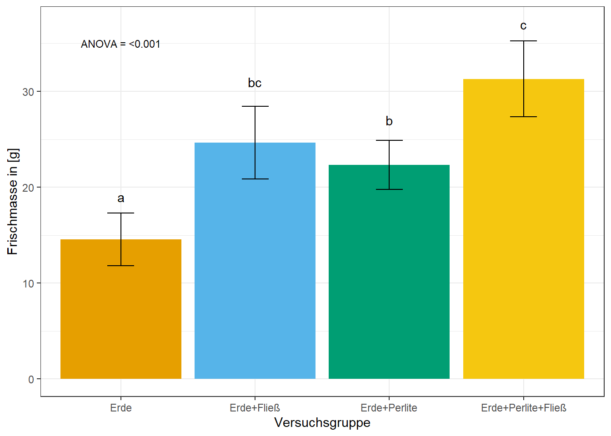
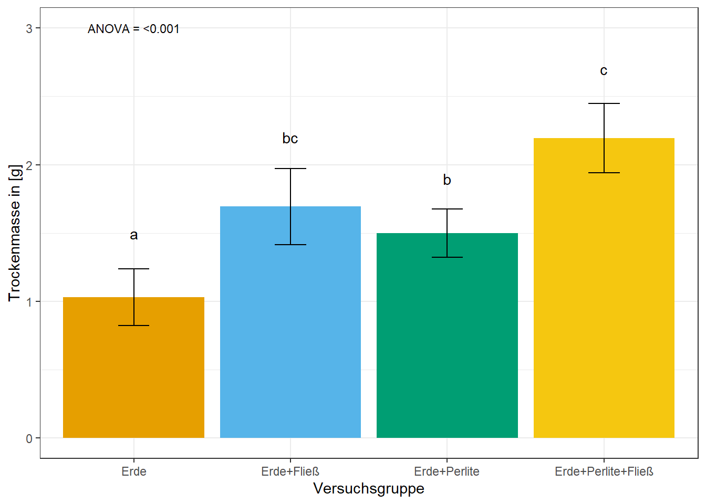
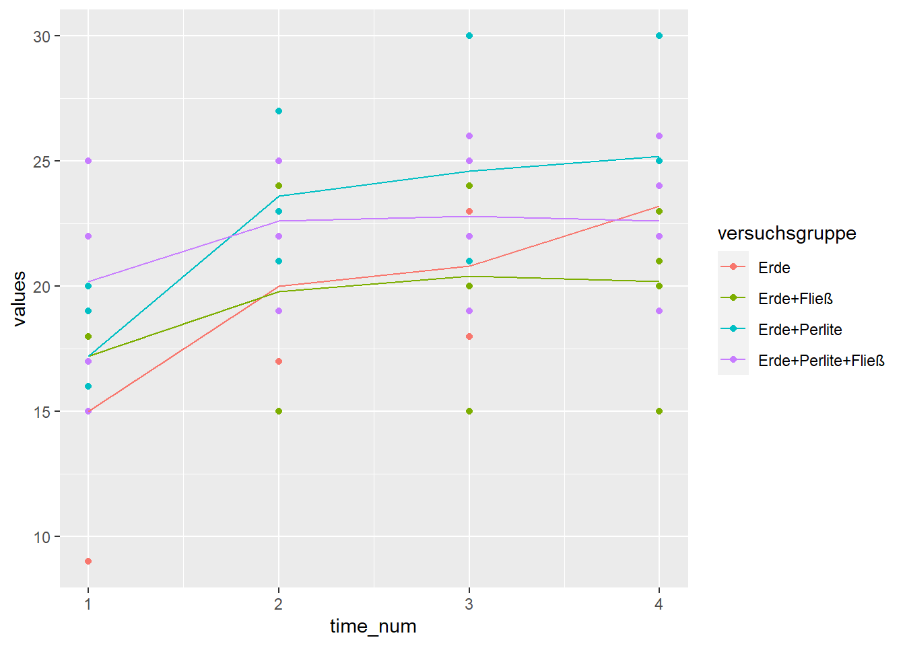
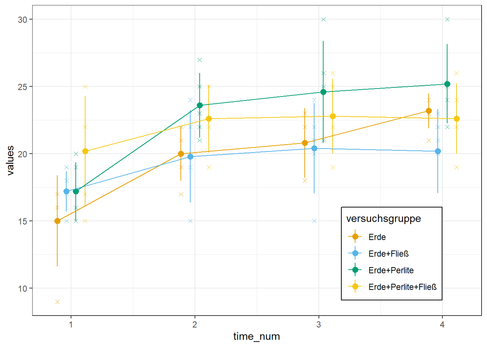

pacman::p_load(tidyverse, readxl, parameters,
effectsize, magrittr, multcomp,
multcompView, rcompanion, rstatix,
emmeans, see,
conflicted)
## resolve some conflicts with same function naming
conflicts_prefer(dplyr::select)
conflicts_prefer(dplyr::filter)
conflicts_prefer(effectsize::eta_squared)13 Steuerung der vegetativen Entwicklung krautiger Pflanzen (44B0608)
Version vom Mai 04, 2023 um 12:46:44
Wir wollen folgende R Pakete in diesem Kapitel nutzen.
Es geht hier um das Modul Steuerung der vegetativen Entwicklung krautiger Pflanzen (44B0608)
basi_tbl <- read_excel("data/keimversuch_basilikum.xlsx") %>%
mutate(versuchsgruppe = as_factor(versuchsgruppe))
## Ist das Outcome annährend normalverteilt
## -> ja, ANOVA
## -> nein, Sie unten
ggplot(basi_tbl, aes(versuchsgruppe, frischmasse)) +
theme_bw() +
geom_point()
basi_tbl %>%
group_by(versuchsgruppe) %>%
shapiro_test(frischmasse)# A tibble: 4 x 4
versuchsgruppe variable statistic p
<fct> <chr> <dbl> <dbl>
1 Erde frischmasse 0.990 0.980
2 Erde+Fließ frischmasse 0.774 0.0486
3 Erde+Perlite frischmasse 0.957 0.786
4 Erde+Perlite+Fließ frischmasse 0.977 0.918 ## Wir nehmen an, dass es sich bei Frischmasse um einen annährend
## normalverteilten Endpunkt handelt.
fit <- lm(frischmasse ~ versuchsgruppe, data = basi_tbl)
fit %>%
anova() %>%
parameters()Parameter | Sum_Squares | df | Mean_Square | F | p
----------------------------------------------------------------
versuchsgruppe | 715.54 | 3 | 238.51 | 21.70 | < .001
Residuals | 175.89 | 16 | 10.99 | |
Anova Table (Type 1 tests)fit %>%
eta_squared()# Effect Size for ANOVA
Parameter | Eta2 | 95% CI
------------------------------------
versuchsgruppe | 0.80 | [0.61, 1.00]
- One-sided CIs: upper bound fixed at [1.00].## posthoc Test durchführen.
## Welcher paarweise Unterschied ist signifikant?
## alle Varianzen in allen Gruppen sind gleich
basi_tbl %$%
pairwise.t.test(frischmasse, versuchsgruppe)
Pairwise comparisons using t tests with pooled SD
data: frischmasse and versuchsgruppe
Erde Erde+Fließ Erde+Perlite
Erde+Fließ 0.00097 - -
Erde+Perlite 0.00582 0.28493 -
Erde+Perlite+Fließ 3.4e-06 0.01173 0.00229
P value adjustment method: holm ## alle Varianzen unterscheiden sich
basi_tbl %$%
pairwise.t.test(frischmasse, versuchsgruppe,
pool.sd = FALSE)
Pairwise comparisons using t tests with non-pooled SD
data: frischmasse and versuchsgruppe
Erde Erde+Fließ Erde+Perlite
Erde+Fließ 0.00853 - -
Erde+Perlite 0.00853 0.29330 -
Erde+Perlite+Fließ 0.00059 0.05245 0.01172
P value adjustment method: holm ## Soll ich für multiple Vergleiche adjustieren?
## -> nein!
basi_tbl %$%
pairwise.t.test(frischmasse, versuchsgruppe,
pool.sd = FALSE, p.adjust.method = "none")
Pairwise comparisons using t tests with non-pooled SD
data: frischmasse and versuchsgruppe
Erde Erde+Fließ Erde+Perlite
Erde+Fließ 0.0017 - -
Erde+Perlite 0.0017 0.2933 -
Erde+Perlite+Fließ 9.9e-05 0.0262 0.0039
P value adjustment method: none ## -> ja
basi_tbl %$%
pairwise.t.test(frischmasse, versuchsgruppe,
pool.sd = FALSE,
p.adjust.method = "bonferroni")
Pairwise comparisons using t tests with non-pooled SD
data: frischmasse and versuchsgruppe
Erde Erde+Fließ Erde+Perlite
Erde+Fließ 0.01024 - -
Erde+Perlite 0.01023 1.00000 -
Erde+Perlite+Fließ 0.00059 0.15734 0.02344
P value adjustment method: bonferroni ## Die p-Werte sind nach Bonferroni adjustiert
basi_tbl %$%
pairwise.t.test(frischmasse, versuchsgruppe,
pool.sd = FALSE,
p.adjust.method = "bonferroni") %>%
extract2("p.value") %>%
fullPTable() %>%
multcompLetters() Erde Erde+Fließ Erde+Perlite Erde+Perlite+Fließ
"a" "bc" "b" "c" ## Barplot mit compact letter display und abspeichern
stat_tbl <- basi_tbl %>%
group_by(versuchsgruppe) %>%
summarise(mean = mean(frischmasse),
sd = sd(frischmasse),
se = sd/sqrt(n()))
ggplot(stat_tbl, aes(x = versuchsgruppe, y = mean,
fill = versuchsgruppe)) +
theme_bw() +
geom_bar(stat = "identity") +
geom_errorbar(aes(ymin = mean-sd, ymax = mean+sd),
width = 0.2) +
labs(x = "Versuchsgruppe", y = "Frischmasse in [g]") +
theme(legend.position = "none") +
scale_fill_okabeito() +
annotate("text",
x = 1:4,
y = c(19, 31, 27, 37),
label = c("a", "bc", "b", "c")) +
annotate("text", x = 1, y = 35,
label = "ANOVA = <0.001", size = 3)
ggsave("img/barplot_frischmasse.png",
width = 5, height = 3)
## Trockengewicht
fit <- lm(trockenmasse ~ versuchsgruppe, data = basi_tbl)
fit %>%
anova() %>%
parameters()Parameter | Sum_Squares | df | Mean_Square | F | p
----------------------------------------------------------------
versuchsgruppe | 3.48 | 3 | 1.16 | 21.58 | < .001
Residuals | 0.86 | 16 | 0.05 | |
Anova Table (Type 1 tests)fit %>%
eta_squared()# Effect Size for ANOVA
Parameter | Eta2 | 95% CI
------------------------------------
versuchsgruppe | 0.80 | [0.60, 1.00]
- One-sided CIs: upper bound fixed at [1.00].basi_tbl %$%
pairwise.t.test(trockenmasse, versuchsgruppe,
pool.sd = FALSE,
p.adjust.method = "bonferroni") %>%
extract2("p.value") %>%
fullPTable() %>%
multcompLetters() Erde Erde+Fließ Erde+Perlite Erde+Perlite+Fließ
"a" "bc" "b" "c" ## Barplot mit compact letter display und abspeichern
stat_tbl <- basi_tbl %>%
group_by(versuchsgruppe) %>%
summarise(mean = mean(trockenmasse),
sd = sd(trockenmasse),
se = sd/sqrt(n()))
ggplot(stat_tbl, aes(x = versuchsgruppe, y = mean,
fill = versuchsgruppe)) +
theme_bw() +
geom_bar(stat = "identity") +
geom_errorbar(aes(ymin = mean-sd, ymax = mean+sd),
width = 0.2) +
labs(x = "Versuchsgruppe", y = "Trockenmasse in [g]") +
theme(legend.position = "none") +
scale_fill_okabeito() +
annotate("text",
x = 1:4,
y = c(1.5, 2.2, 1.9, 2.7),
label = c("a", "bc", "b", "c")) +
annotate("text", x = 1, y = 3,
label = "ANOVA = <0.001", size = 3)
ggsave("img/barplot_trockenmasse.png",
width = 5, height = 3)
##basi_time_tbl <- basi_tbl %>%
select(versuchsgruppe, t1:t4) %>%
pivot_longer(cols = t1:t4,
values_to = "values",
names_to = "timepoint") %>%
mutate(timepoint = as_factor(timepoint),
time_num = as.numeric(timepoint))
ggplot(basi_time_tbl, aes(time_num, values, color = versuchsgruppe)) +
geom_point() +
stat_summary(fun = "mean", fun.min = "min", fun.max = "max", geom = "line") 
ggplot(basi_time_tbl, aes(time_num, values, color = versuchsgruppe)) +
theme_bw() +
scale_color_okabeito() +
geom_jitter(position=position_dodge(0.3), shape = 4) +
stat_summary(fun.data="mean_sdl", , fun.args = list(mult = 1),
geom="pointrange", position=position_dodge(0.3)) +
stat_summary(fun = "mean", fun.min = "min", fun.max = "max", geom = "line",
position=position_dodge(0.3)) +
theme(legend.position = c(0.8, 0.2),
legend.background = element_rect(color="black",
size=0.5, linetype="solid"))Warning: The `size` argument of `element_rect()` is deprecated as of ggplot2 3.4.0.
i Please use the `linewidth` argument instead.
lm(values ~ versuchsgruppe + timepoint + versuchsgruppe:timepoint, basi_time_tbl) %>%
anova()Analysis of Variance Table
Response: values
Df Sum Sq Mean Sq F value Pr(>F)
versuchsgruppe 3 158.84 52.946 6.5265 0.0006392 ***
timepoint 3 355.34 118.446 14.6004 2.386e-07 ***
versuchsgruppe:timepoint 9 83.51 9.279 1.1438 0.3461217
Residuals 64 519.20 8.112
---
Signif. codes: 0 '***' 0.001 '**' 0.01 '*' 0.05 '.' 0.1 ' ' 1lm(values ~ versuchsgruppe + timepoint + versuchsgruppe:timepoint, basi_time_tbl) %>%
emmeans(specs = ~ versuchsgruppe | timepoint) %>%
contrast(method = "pairwise", adjust = "none") %>%
as_tibble %>%
select(contrast, timepoint, p.value) %>%
mutate(p.value = format.pval(p.value, eps = 0.001, digits = 2)) %>%
print(n = Inf)# A tibble: 24 x 3
contrast timepoint p.value
<fct> <fct> <chr>
1 Erde - (Erde+Fließ) t1 0.2265
2 Erde - (Erde+Perlite) t1 0.2265
3 Erde - (Erde+Perlite+Fließ) t1 0.0053
4 (Erde+Fließ) - (Erde+Perlite) t1 1.0000
5 (Erde+Fließ) - (Erde+Perlite+Fließ) t1 0.1007
6 (Erde+Perlite) - (Erde+Perlite+Fließ) t1 0.1007
7 Erde - (Erde+Fließ) t2 0.9119
8 Erde - (Erde+Perlite) t2 0.0499
9 Erde - (Erde+Perlite+Fließ) t2 0.1538
10 (Erde+Fließ) - (Erde+Perlite) t2 0.0388
11 (Erde+Fließ) - (Erde+Perlite+Fließ) t2 0.1250
12 (Erde+Perlite) - (Erde+Perlite+Fließ) t2 0.5807
13 Erde - (Erde+Fließ) t3 0.8250
14 Erde - (Erde+Perlite) t3 0.0388
15 Erde - (Erde+Perlite+Fließ) t3 0.2710
16 (Erde+Fließ) - (Erde+Perlite) t3 0.0229
17 (Erde+Fließ) - (Erde+Perlite+Fließ) t3 0.1875
18 (Erde+Perlite) - (Erde+Perlite+Fließ) t3 0.3214
19 Erde - (Erde+Fließ) t4 0.1007
20 Erde - (Erde+Perlite) t4 0.2710
21 Erde - (Erde+Perlite+Fließ) t4 0.7402
22 (Erde+Fließ) - (Erde+Perlite) t4 0.0072
23 (Erde+Fließ) - (Erde+Perlite+Fließ) t4 0.1875
24 (Erde+Perlite) - (Erde+Perlite+Fließ) t4 0.1538 lm(values ~ versuchsgruppe + timepoint + versuchsgruppe:timepoint, basi_time_tbl) %>%
emmeans(specs = ~ versuchsgruppe | timepoint) %>%
cld(Letters = letters, adjust = "none") timepoint = t1:
versuchsgruppe emmean SE df lower.CL upper.CL .group
Erde 15.0 1.27 64 12.5 17.5 a
Erde+Perlite 17.2 1.27 64 14.7 19.7 ab
Erde+Fließ 17.2 1.27 64 14.7 19.7 ab
Erde+Perlite+Fließ 20.2 1.27 64 17.7 22.7 b
timepoint = t2:
versuchsgruppe emmean SE df lower.CL upper.CL .group
Erde+Fließ 19.8 1.27 64 17.3 22.3 a
Erde 20.0 1.27 64 17.5 22.5 a
Erde+Perlite+Fließ 22.6 1.27 64 20.1 25.1 ab
Erde+Perlite 23.6 1.27 64 21.1 26.1 b
timepoint = t3:
versuchsgruppe emmean SE df lower.CL upper.CL .group
Erde+Fließ 20.4 1.27 64 17.9 22.9 a
Erde 20.8 1.27 64 18.3 23.3 a
Erde+Perlite+Fließ 22.8 1.27 64 20.3 25.3 ab
Erde+Perlite 24.6 1.27 64 22.1 27.1 b
timepoint = t4:
versuchsgruppe emmean SE df lower.CL upper.CL .group
Erde+Fließ 20.2 1.27 64 17.7 22.7 a
Erde+Perlite+Fließ 22.6 1.27 64 20.1 25.1 ab
Erde 23.2 1.27 64 20.7 25.7 ab
Erde+Perlite 25.2 1.27 64 22.7 27.7 b
Confidence level used: 0.95
significance level used: alpha = 0.05
NOTE: If two or more means share the same grouping symbol,
then we cannot show them to be different.
But we also did not show them to be the same.